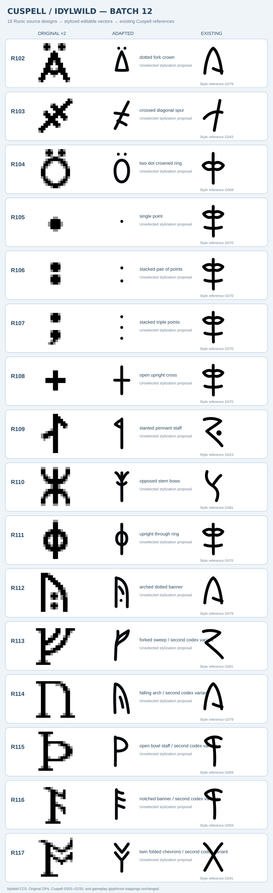

Left: actual Idylwild 16px source pixels. Middle: proposed editable Cuspell-style vector. Right: unmodified current Cuspell glyph as a visual reference, not a semantic or replacement mapping.

Source: Idylwild CC0. Original and canonical artwork preserved.